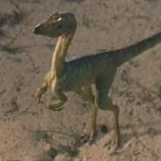
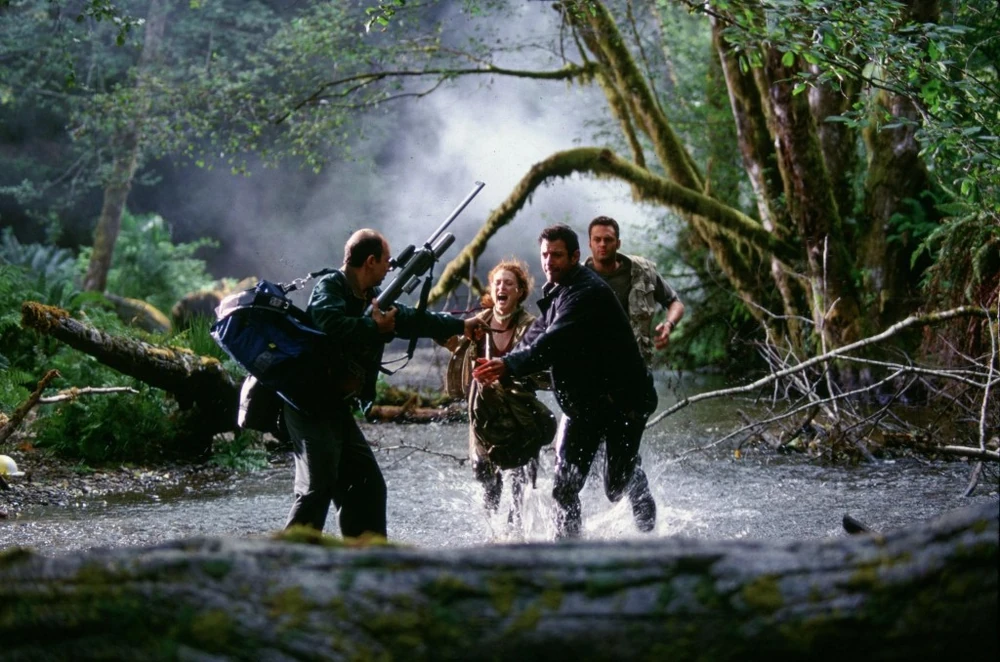

 Four years after the disaster at Jurassic Park, a wealthy British couple have decided to take a vacation on Isla Sorna, an island 87 miles southwest of Isla Nublar. The couple's daughter wanders off into the wilderness, inadvertently encountering and being attacked by a pack of Compsognathus. The resulting lawsuit filed against InGen leads to John Hammond resigning from his position as CEO of InGen.
Soon after, the company is taken over by Hammond's nephew, Peter Ludlow. Meanwhile, mathematician Dr. Ian Malcolm, despite having signed an agreement that forbade him from ever divulging any information on his visit to Isla Nublar, reveals to the media of InGen's attempts at cloning dinosaurs, which almost destroys his credibility as he cannot support his claims under InGen's threat of legal action.
Hammond then calls upon Malcolm and asks for his help. Much to Malcolm's surprise, InGen has a second island, named Isla Sorna, where the original research was performed, and the animals were manufactured. A hurricane forced an evacuation of the island, and the dinosaurs were released into the wild at the very last minute, in order to mature and thrive in their own separate environment. Ludlow persuades InGen's investors that a dinosaur theme park is still a viable idea, and decides to exploit the second island by capturing several animals, and bring them to San Diego, where InGen is finishing construction on an abandoned Jurassic Park stadium. Having had a change of heart, Hammond is trying to prevent this: if he gathers a team of experts to document the dinosaurs in their new habitat, he may just rally enough public support to save the ancient animals from life in captivity. Malcolm initially declines, but then learns that his girlfriend, paleontologist Dr. Sarah Harding, is already on the island by herself. He then reluctantly agrees to go in an attempt to rescue Sarah. As he prepares for the trip, Ian is visited by his daughter, Kelly Curtis (one of the three children he mentions having in the first film).
 The rest of Hammond's team (formed as the "Gatherers") consists of engineer Eddie Carr (who built the custom vehicles the team use, including two solar-powered Mercedes SUVs and a special trailer with an onboard laboratory), and wildlife documentarian Nick Van Owen. While in the garage, Ian reunites with his daughter, Kelly. The two talk about their ways of life, but as Kelly is skeptical about her father going to Isla Sorna, it causes a rift between the two. They arrive at the island via boat and find Sarah in the wilderness, taking photographs. After escaping an alarmed Stegosaurus herd, the group returns to their camp site and find Kelly, who secretly stowed away on the trailers. A furious Ian tries to contact the boat, but unfortunately, this is interrupted as InGen has officially sent their second team to the island to hunt down and capture the dinosaurs.